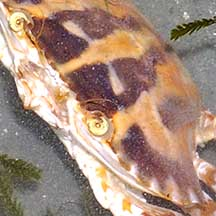
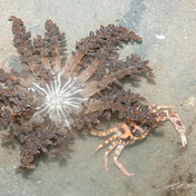
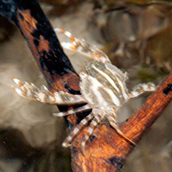
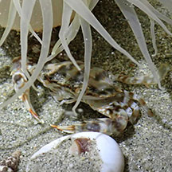

|
|
| crabs text index | photo index |
| Phylum Arthropoda > Subphylum Crustacea > Class Malacostraca > Order Decapoda > Brachyurans > Family Portunidae |
| Crucifix
swimming crab Charybdis feriata* Family Portunidae updated Dec 2019 Where seen? This boldly marked swimming crab is not often encountered on the intertidal, perhaps it is more common in deeper water. Said to inhabit sandy-muddy bottoms. Sometimes seen hiding under sea anemones. Media articles suggest this crab is not often encountered in our part of the region. It is also known as Charybdis feriatus. Features: Body width 5-7cm, to 20cm. Body somewhat fan-shaped, with 5 spines on the sides. The eyes not far apart. Last pair of legs are paddle-shaped and rotate like boat propellers. Body with bold wide dark lines often with a distinctive white cross in the centre of the body which gives it its common name. Legs with dark bands, pincers with white spots on dark background. Holy crab? Some people believe that these crabs were blessed by the missionary, St Francis Xavier. The Jesuit story is that in February 1546, St Francis was caught in a storm in eastern Indonesia. In an attempt to calm the storm, he took his crucifix and dipped it into the sea, but it slipped from his grasp and fell into the water. The next morning, as he reached the shores of Seram Island, a crab with a cross-shaped mark approached him holding his cross. Xavier knelt down, retrieved the cross, and blessed the crab. Human uses: The commercially most important of the Charybdis species, caught by bottom trawls, sometimes by traps and nets. It sells for a premium in East Asia. More delicate than Mud crabs (Scylla sp.), it is usually sold frozen. |
 Chek Jawa, Jul 05 |
 5 spines on the body side, white cross pattern on its back |
 Seen hiding under a Fire anemone. Pulau Semakau, Oct 11 |
*Species are difficult to positively identify without close examination.
On this website, they are grouped by external features for convenience of display.
| Crucifix swimming crabs on Singapore shores |
On wildsingapore
flickr
|
| Other sightings on Singapore shores |
 Possibly a juvenile. Pulau Semakau North, Apr 17 Photo shared by Heng Pei Yan on facebook. |
 Hiding under a Pearly anemone. Changi East (Lost Coast), Jul 24 Photo shared by Rachael Goh on facebook. |
Links
|